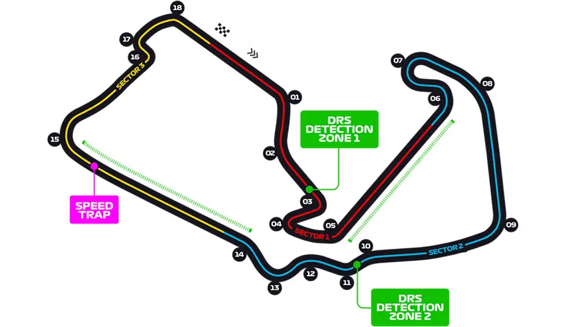

Próxima Corrida: GP da Grã-Bretanha

Últimas Notícias

Russell vence na Áustria e aumenta pressão sobre Verstappen
Piloto da Mercedes domina o Red Bull Ring e consolida liderança na temporada 2026.

McLaren admite atraso na F1 2026 e crise da equipe campeã preocupa
Norris revela atraso de três meses no desenvolvimento do MCL40 enquanto a equipe luta para recuperar terreno.

Honda admite crise na Aston Martin e fantasma da McLaren volta
Início turbulento de parceria traz preocupações sobre a confiabilidade e performance do projeto 2026.

Russell admite crise interna na Mercedes enquanto Antonelli domina F1
Problemas na bateria e queda de performance do britânico abrem debate sobre hierarquia na equipe.

Nova era de Antonelli na F1 ganha força, mas Ferrari de Hamilton ameaça
Italiano lidera o campeonato, mas a evolução da Ferrari coloca Hamilton na briga pelo título.

Audi admite crise no motor enquanto Ferrari prepara pacote agressivo
Dificuldades técnicas da montadora alemã contrastam com o salto de performance da Ferrari.

Verstappen testa atualização secreta no RB22 visando o GP da Áustria
Crise em Barcelona força Red Bull a buscar redução de peso e performance urgente.

Ferrari recebe autorização para upgrades e Rafael Câmara testa SF-25
FIA libera atualizações extras para 2026 e brasileiro ganha força na Academia Ferrari.

Bortoleto admite chance perdida: "Perdemos oportunidade de pontuar"
Brasileiro lamenta erros operacionais da Audi mesmo com bom ritmo em Barcelona.